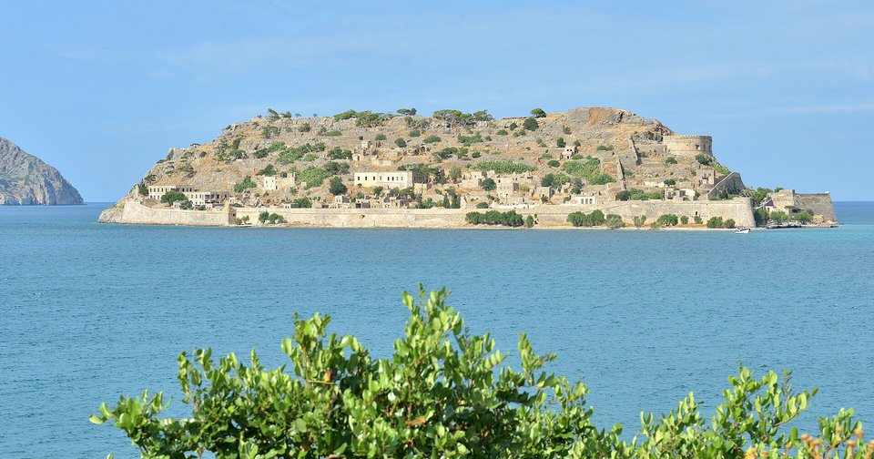
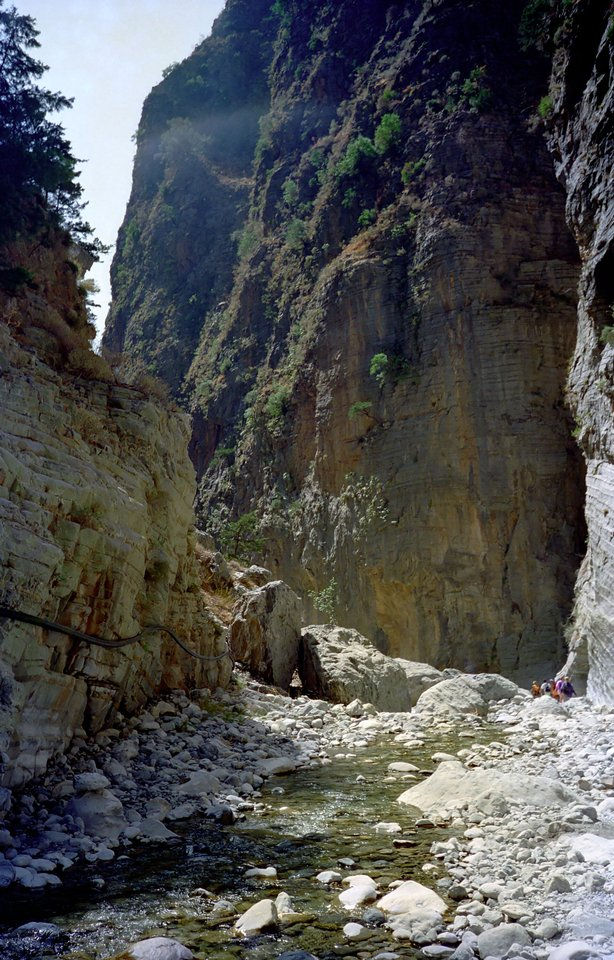

Discover pool — Sicily / Crete / Sardinia shortlist
NOT a review widget. Static contact sheet for later human review.
Albania shortlist (8) remains on albania-repass-shortlist/ — unchanged. Method DOC-009 / AN-018 / CHG-019.
vw-story-crete-spinalonga-fortress-east-qi Spinalonga Venetian sea-walls from east — QI fortress WOW Cayambe · CC BY-SA 4.0

vw-story-crete-spinalonga-ile-qi Spinalonga island classic silhouette across gulf — QI establishing This Photo was taken by Wolfgang Moroder.
Feel free to use my photos, but please mention me as the author and send me a message.
This image is not in the public domain. Please respect the copyright protection. It may only be used according to the rules mentioned here. This specifically excludes use in social media, if applicable terms of the licenses listed here not appropriate.
Please do not upload an updated image here without consultation with the Author. The author would like to make corrections only at his own source. This ensures that the changes are preserved.Please if you think that any changes should be required, please inform the author.Otherwise you can upload a new image with a new name. Please use one of the templates derivative or extract. · CC BY-SA 3.0

vw-story-crete-samaria-dominou-1 Samaria Gorge narrows — sheer rock walls + stream (place-proven title) Katerina Dominou · CC BY-SA 4.0